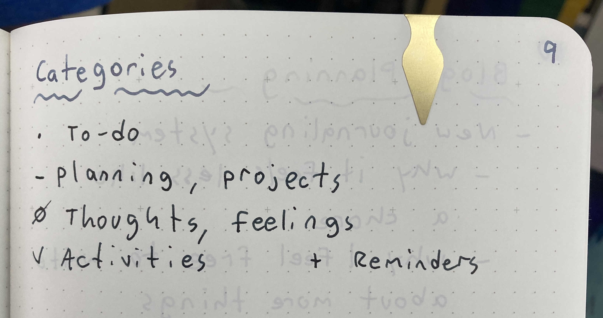
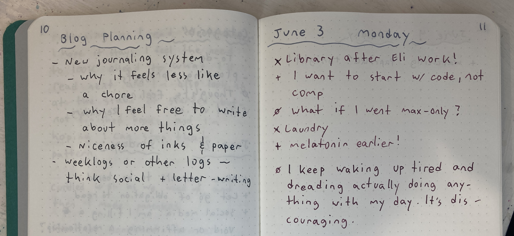
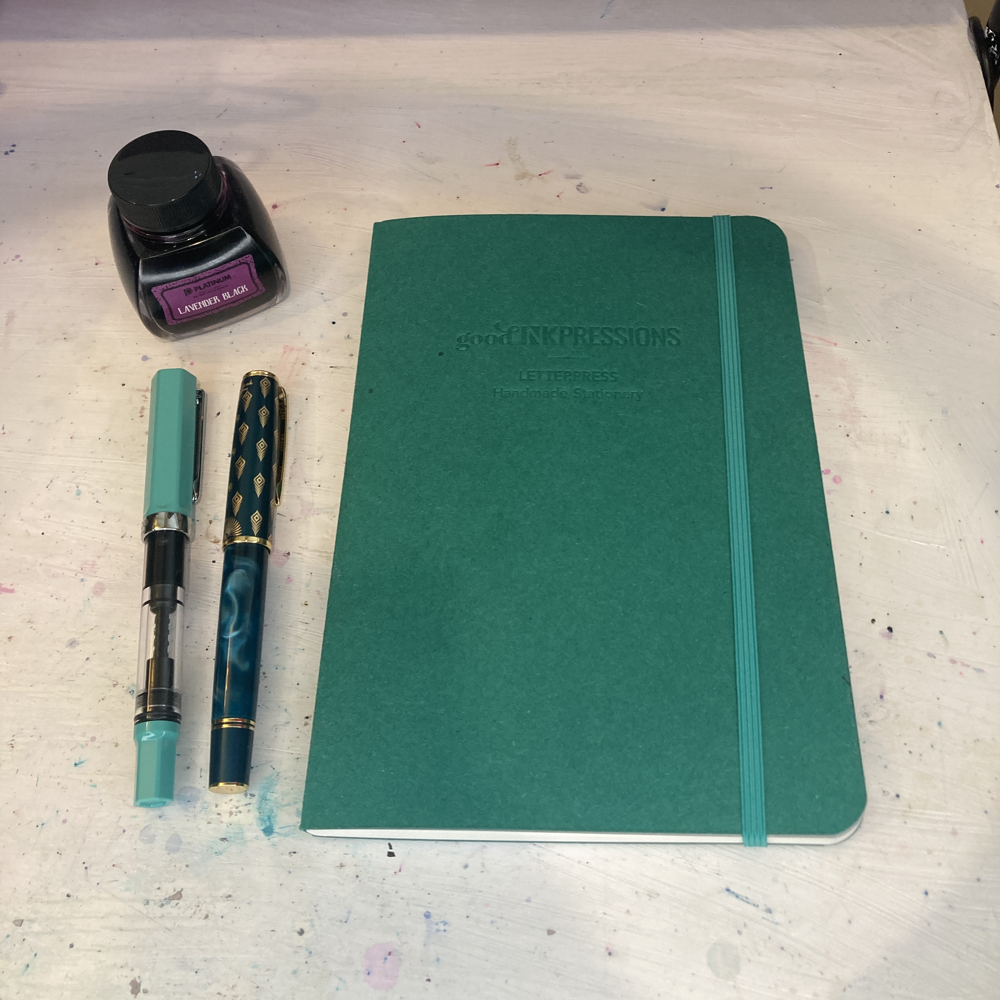

Making Journaling More Enjoyable
Hi everyone! Since February 2023, I've discovered an interest in fountain pens, and I've been using them for bullet journaling. I've been enjoying it a lot—I've found some really beautiful inks, and my handwriting has gotten significantly less messy—but for a while I felt I was hitting a wall, and it wasn't as enjoyable of an experience as I thought it could be. The other day however, I had another look at some other people's journals, and I made some updates to my system that have made journaling even nicer to do.
My Previous Issues
There are a number of features that make something a "bullet" journal, but two of the most important are an index and a key. The index allows you to put everything in one book—it's OK if things are "out of order," or mixed together, since you can find each topic in the index. The key lets you label different kinds of information: to-do lists, thoughts, reminders, etc.
Previously I was using a dot for to-do items and a line for miscellaneous list items (e.g., composition planning), and then throwing everything else in unmarked. What I realized was that I was mostly using the journal as a fancy to-do list, and that made journaling feel like work. If I didn't manage to complete an item, I felt bad. The two things that ended up helping were adding more key symbols and making a purposeful choice to avoid to-do style lists unless absolutely necessary.
My New System
My new system (see below) has 5 symbols in the key: to-do; planning (e.g., composition/programming); thoughts and feelings; logging activities I've done; and reminders. The reminders in particular have been nice. Being able to list things I want to do without the intent of crossing them out works better for my brain. I don't feel as pressured to complete the list if there's no visual indication of whether I've completed a task. Also, I find that including symbols for more categories makes those categories feel more "legitimate" and less like an afterthought, as well as making it easier to go back and parse the information. This way, I feel more compelled to write a variety of things other than to-dos, as well as not having that variety of things make my journal look messy.
An example of this key system in action:
The Writing Tools
One thing that's remained constant from the beginning is that the niceness of the inks and paper make it enjoyable. The notebook I have is a goodinkpressions notebook with Tomoe River paper, which a lot of fountain pen users really like because of how it shows off the shading and character of the ink.
The ink I've been using the most lately is Platinum Lavender Black. It's an iron gall ink—a formula that dates back at least to Pliny the Elder. As the name suggests, when you write with the ink it starts out a rich magenta, and as the iron salts oxidize, it turns a dark reddish black color. It's really cool to watch! In the show The Owl House, there's a moment where the character Lilith looks bedgraggled and mentally unwell. As she finishes writing some magical glyphs, she giggles and says "watching the ink dry is the best part!" I know she's supposed to be "losing it," but I genuinely feel like that!
Overall I really appreciate how fountain pens turn the act of writing into something a little more ceremonial and leisurely. It makes me slow down for a second and be fully in the moment as I write. The paper has a nice sensation under my hand and against the pen tip, and the inks (plus the flexibility to put any ink I want in the pen) make the experience feel extra fancy.

User Comments